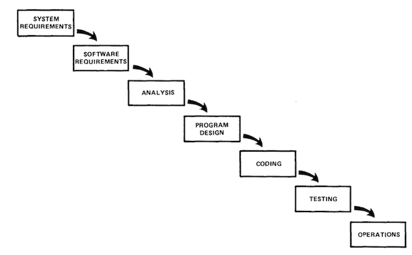

1.1 Introdução engenharia de software
Software Engineering Body of Knowledge (SWEBOK) surgiu através de uma parceria entre o IEEE, a Computer Society e ACM a fim de promover a profissionalização da Engenharia de Software e criar um consenso sobre as áreas de conhecimento da Engenharia de Software e seu escopo.
Você pode baixar gratuitamente o SWEBOK aqui.
1.1.2 - Ética na engenharia de software
Análise de como problemas evitáveis podem resultar de um sistema de TI e, em seguida, tomar medidas realistas para evitá-los.
1.2 - MODELOS DE DESENVOLVIMENTO DE SOFTWARE
Existem diversas atividaes que precisam ser executadas no desenvolvimento de software, tais como: Levantamento de requisitos, codificação, testes e operação. Estas atividaes são organizadas e representadas por alguns modelos.
1.2.1 - Modelos de processos de software.
Os principais modelos discutidos são:- Modelo em cascata
- Modelo evolucionário
- Modelo espiral
- Modelo incremental
- Modelo RAD
- Modelo Desenvolvimento Formal de Sistemas
- Modelo em V
- Modelo de Processo Unificado
- Modelo Praxis
1.2.1 - Modelos de processos de software.
O primeiro modelo documentado foi o Modelo em Cascata em 1970 por Royce.
1.2.2 - Atividades do processo
Assim como descrito por Royce, as principais atividades do desenvolimento de softeware são:
Levantamento de requisitos, Análise de requisitos, Implementação, Testes, Implantação e Operação.
Estas atividades são comum em quase todos os modelos de desenvolvimento de software
1.2.3 - Mudanças
Mudanças de software são oriundas de alterações (funcionais ou não funcionais) em um sistema de
informação e fazem parte da gestão de configuração de de um software.
O framework ITIL apresenta algumas ferramentas para gestão de mudanças em TI.
1.2.4 - Processo Unificado da Rational (RUP)
O RUP decompoe o processo em 4 fases e baseia-se nos 4Ps (Pessoas, Projeto, Produto e Processo)

1.2.4 - Processo Unificado da Rational (RUP)
Fase Iniciação:
São levantados os requisitos e transformados em casos de uso.
Fase Elaboração:
A arquitetura do sistema é especificada junto com a modelagem de negócio, começa-se a elaboraçã do manual do usuário e então o projeto é criado (escopo, prazo e custo).
Fase Construção:
Codificação e testes.
Fase Transição:
Entrega do software em produção, acompanhamento do software e treinamento do usuário.
1.3 - MÉTODOS ÁGEIS DE DESENVOLVIMENTO DE SOFTWARE
Em 2001 foi criado o Manifesto Ágil que se baseia em 4 pilares:
- Indivíduos e interações > processos e ferramentas
- Software funcionando > documentação abrangente
- Colaboração com cliente > negociação de contratos
- Responder a mudanças > seguir um plano
1.3.1 - Programação Extrema (XP)
Extreme Programming (XP) é uma metodologia ágil de desenvolvimento de software.
- Feedback constante
- Incremental
- Encoraja a comunicação
1.3.1 - Programação Extrema (XP) - Práticas
- Planning Game - Planejamento Semanal / Histórias de usuários
- Small Releases - Liberação de pequenas versões funcioanis
- Metaphor - Use de metáforas para explicar ao cliente o funcionamento do software
- Simple Design - Codifique apenas o que é solicitado pelo cliente
- Customer Tests - Testes de aceitação são realizados pelo cliente
- Sustainable Pace - A semana possui apenas 40hrs
- Collective Ownership - Todos são donos do produto
- Pair Programming - Programação em pares visa melhorar a qualidade do código
- Coding Standards - Padrões de nomes, tabulações, etc
- Test Driven Development - Codificação orientada à Testes
- Integração Contínua - Garante que sempre haverá uma versão integrada do software
1.3.1 - Scrum
Scrum é uma metodologia ágil para gestão e planejamento de projetos de software
- Projetos são dividos em interações chamados de Sprints.
- O estoque de trabalho é chamado de Product Backlog.
- No início de cada Sprint é feita uma reunião de Sprint Planning onde o Product Owner prioriza os itens do Product Backlog.
- A equipe seleciona as atividades que serão movidas do Product Backlog para o Sprint Backlog.
- Diariamente ocorre uma reunião de Daily Scrum para listar impedimentos e falar sobre o que foi feito ontem e o que será feito hoje.
- Ao final de um Sprint os resultados são apresentados na Sprint Review Meeting, e faz-se uma Sprint Retrospective.
1.3.1 - Scrum

1.3.2 - Gerenciamento ágil
O projeto é todo dividido em etapas menores, chamadas de iteração, que duram de 1 semana (XP)
até no máximo 4 (Scrum) e ao final de cada etapa há uma reavaliação das prioridades do projeto.
E um possível replanejamento da etapa que virá em sequência.
1.3.3 - Escalonamento de métodos ágeis
Times ágeis são enxutos, não maiores que 10 integrantes. Escalar métodos ágeis é um desafio constante de diversas empresas.
- LeSS - Large-Scale Scrum
- SAFe - caled Agile Framework
- DAD - Disciplined Agile Delivery
- Framework Spotify
- Framework Nexus